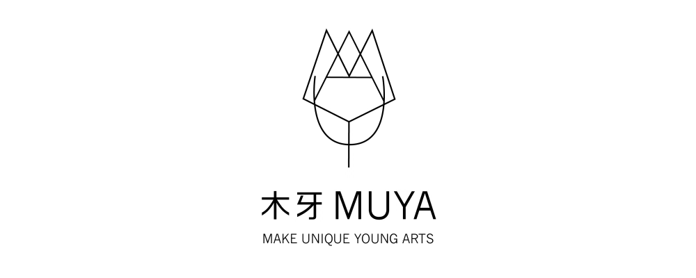
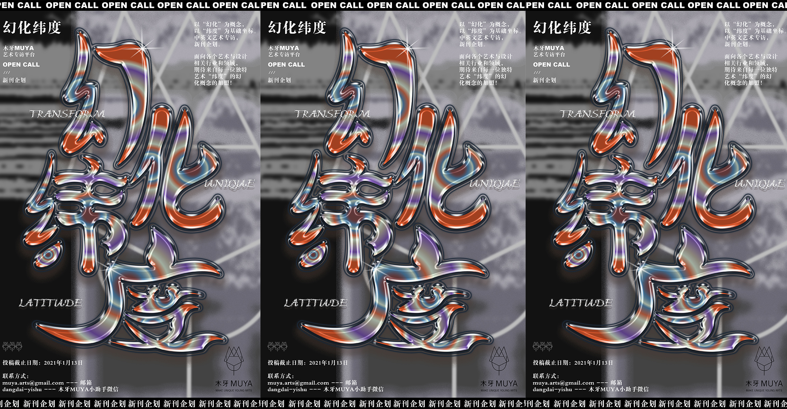

幻化纬度 - OPEN CALL 【木牙MUYA新刊企划】
欢迎来到木牙MAKE UNIIQUE YOUNG ARTS，我们即将开启新的期刊季度，这里是一份季度企划，我们期待您的投稿～
木牙MUYA是一个以中英文艺术访谈与交流的媒体平台，饱含着对艺术的热爱，我们期待倾听更多充满独特的多元化艺术思想，拥有着囊括海内外读者的独特期刊属性，为你打造一个专属于你自己的展示平台，我们怀着对每一个独特艺术概念的敬意，为你量身打造艺术专访的空间。
MUYA is an artist and designer independent subscription and WeMedia art platform based in English and Chinese languages. We hold the respect and love for the art and look forward to hearing from more and more diverse and unique artistic thoughts. We are aiming to build an art interview space and a platform for individuals.
在2020年和2021年的过渡阶段，尽管生活在2020年的我们经历了太多的磨难，但是这都不会停止我们前进的步伐，无论是在哪一个领域，我们都在为我们的美好未来，进行着当下一点一滴的努力。2020年你都在做什么？2021年的你又在筹备什么呢？木牙MUYA迎来了下一季度的的新刊企划，我们期待你的投稿！！
In the time of 2020 and 2021, although we had a tough time in 2020, it will not stop us from moving forward. Whenever we are working, we are still working hard for a better future step by step, day by day. What did you do in 2020? And What are you planning for 2021? MUYA is welcoming our new publication plan for next season. We are looking forward to your submission!!
本次季度期刊主题 --- “幻化纬度”，推出一种以“幻化”为核心概念，以“纬度”为基础坐标的新刊企划。
MUYA next season subscription topic -- 幻化纬度 (Transform & Unique & Latitude), we introduce this topic around with the core concept of “Transform” and the coordinates of “Latitude.” The “transform” is how you use your unique art way or method to shift this world. The “Latitude” is how we respect your thoughts standing in a unique space in this world.

截止日期：2021年1月13日
费用：投递免费 （选中之后学生150人民币，其他200人民币）
-费用将用于公众号排版，网站编辑，ins等平台发布，私人订制问题，英文翻译和定制艺术家专属个性Logo制作其中包括GIF动态Logo。我们是非盈利组织，费用只用来维持平台基本运行。-
DEADLINE: 2021.01.13
FEE: Free for submittion (After be selected, it will be paid for publication: Students 15$; Others 20$)
- The fee will contribute to publication edit, website publish, WeMedia art platform publish, art interview service for individual, English / Chinese translation, and design interview topic logo including promotion video and GIF logo. We are a nonprofit community. The fee will contribute to the general work and run for the whole MUYA art platform. -
幻化纬度 (Transform & Unique & Latitude)
木牙MUYA本次“幻化纬度”主题，面向各个艺术与设计相关行业和领域，包括当代艺术，设计，插画，工艺，街头艺术，动画，新材料，新媒体, 策展人，工作室合伙人，创作家，影视，文字，音乐等杰出新星们和前辈。我们并不在乎你是否是艺术的科班出身，还是仍然在艺术的象牙塔里埋头苦干，只要你怀揣着对艺术的热爱，热衷表达，愿意分享，同时对自己的作品充满自信，又拥有着对于“幻化纬度”概念的独特想法，我们愿意倾听并给予专属特刊专访平台。
MUYA next season topic -- 幻化纬度 (Transform & Unique & Latitude) is facing to all of art and design-related industry and field all around the world. We sincerely invite those who work in contemporary art, design, illustration, craft, street art, animation, new materials, new media, curators, studio partners, creators, film and television, writing, music, other outstanding new stars and predecessors to do creative dialogues. We do not care about whether you graduated from art school or you are still learning as a student. We strongly welcome the people who fascinate in art and design, enjoy speaking out, love to share their works and practices, and, most importantly, confident with your works. Also, you have an idea about our topic 幻化纬度 (Transform & Unique & Latitude), it will be our pleasure to interview you and finalize to individual platform and space. Here is a space just for you!!
这里的“幻化”包含-材料，思维和情感等材料性与非材料性的转化。作为艺术家和设计师的你，拥有着独特思维转化能力，将生活中的所见所闻转化成为一件件优秀，美丽，令人印象深刻的作品，将转化概念与过程默默的隐藏在材料的测试，应用和实践中。
The “幻化” ("Transform") here includes the transformation of material and non-material, such as material, thinking, and emotion. As an artist and designer, you have the unique ability to transform what you see and hear in your life into excellent, beautiful, and impressive works. The transformation concept and process are silently hidden in the testing, application, and practice of materials.
这里的“纬度”代指-每一位艺术与设计概念的独特坐标，每一个纬度都拥有着独特的概念方向，我们认为将人文叙事概念进行材料与非材料性的艺术幻化，是艺术与设计创作过程的独特魅力，我们想将这样的创作经历和过程通过艺术人文专访的形式进行呈现，我们会根据作品以问答的方式进行访问，问题方向会根据每位艺术创意者不同的研究与实践方向而各不相同，（我们的问题是私人订制的哦～～），不同于影像访谈的方式，以文字专访为主，木牙MUYA尝试打破时间和空间的壁垒，图像以语言为基础而构成，又以文字方式进行最终输出与表达。木牙MUYA“幻化纬度” 新刊企划期待来自每一位独特艺术“纬度”的幻化概念～～
Here refers to the "latitude" generation - each one unique coordinate, the concept of art and design every latitude direction has a unique idea. We believe that the literary narrative material and non-material on the concept of art form is a unique charm of art and design creative process. We want to through art creation experience and function of such humanistic interview form for rendering. According to the works, we will interview questions and answer the problem direction according to the different approaches of research and practice of each art creator (our problem is personal customized ~ ~). This method is different from the video interview method, a written interview based on the text, and MUYA tries to break the barriers of time and space. Images are composed based on language, and they are finally output and expressed in the form of words.

木牙MUYA投递方式（submission and contact information)
☛ Email / 邮箱：muya.arts@gmail.com
☛ 微信（小助手）联系方式 （Wechat Contact）：dangdai-yishu
木牙微信订阅号